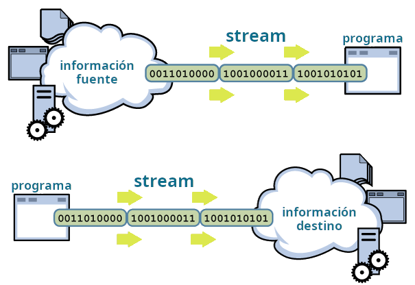
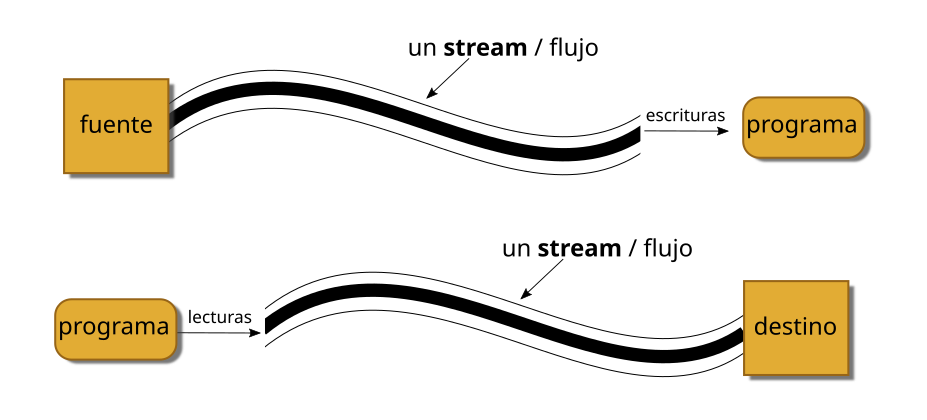
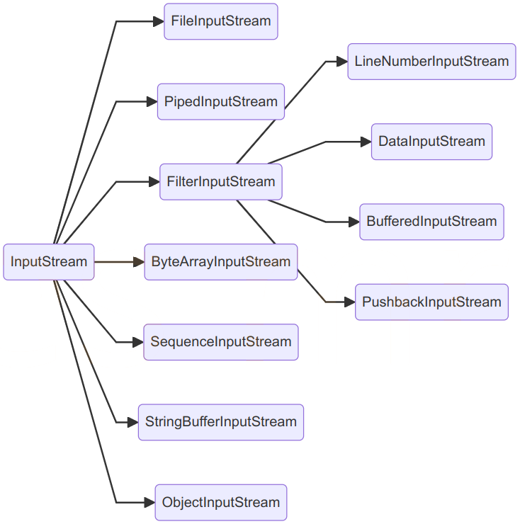
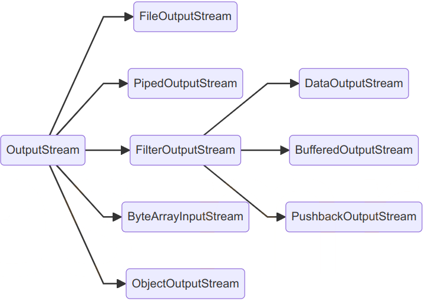
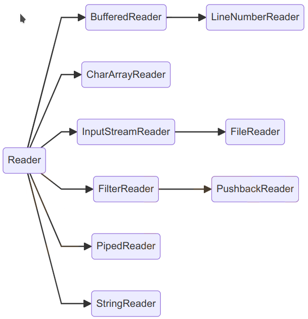
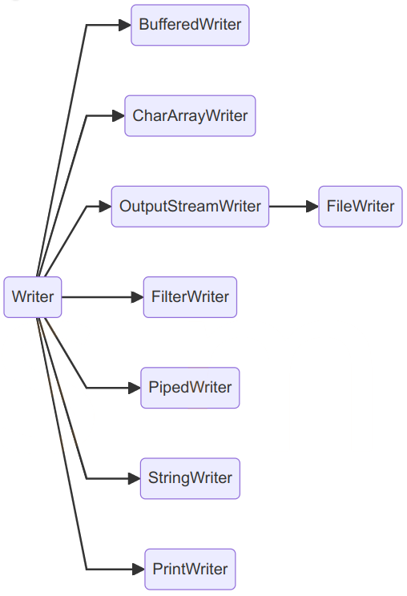
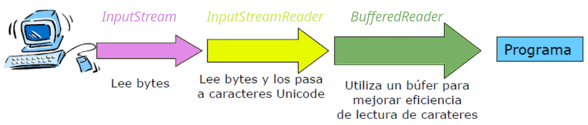
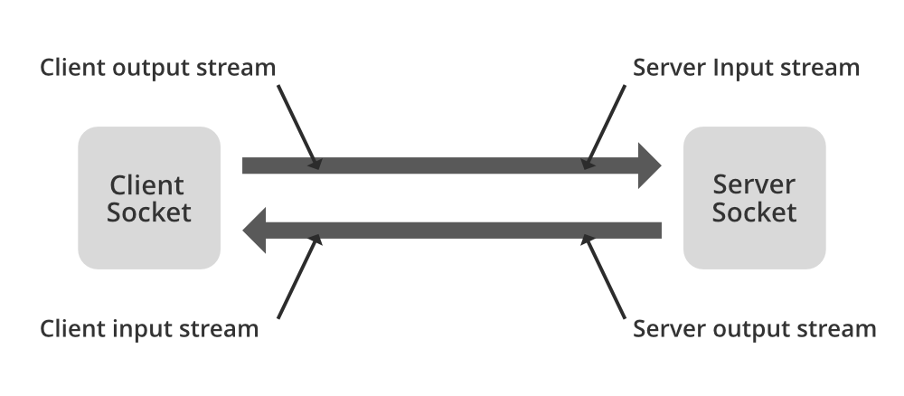

☕ UT6 — Lectura y Escritura de Información (Streams, Ficheros y Serialización)
📌 Informació Curricular de la Unitat (UT6)
Resultat d'Aprenentatge: RA5. Realiza operaciones de entrada y salida de información, utilizando procedimientos específicos del lenguaje y librerías de clases.
Índex ràpid d'apartats en aquesta pàgina:
- 6.0 RA y Criterios de Evaluación — (Obrir apartat individual)
- 6.1 Streams (Flujos de entrada y salida) — (Obrir apartat individual)
- 6.2 Lectura y escritura de ficheros — (Obrir apartat individual)
- 6.3 Serialización de objetos — (Obrir apartat individual)
- 6.4 Comunicación por red: Sockets — (Obrir apartat individual)
- 6.5 Manejo del sistema de ficheros y carpetas (File / NIO) — (Obrir apartat individual)
- Actividades prácticas UT6 — (Obrir apartat individual)
- Retos de programación UT6 — (Obrir apartat individual)
- Proyecto Intermodular UT6 — (Obrir apartat individual)
RA 6 - Escribe programas que manipulen información seleccionando y utilizando tipos avanzados de datos.
| Criterio de Evaluación | Apartado |
|---|---|
| h) Se han identificado las clases relacionadas con el tratamiento de documentos escritos en diferentes lenguajes de intercambio de datos. | A lo largo de toda la UT |
| i) Se han realizado programas que realicen manipulaciones sobre documentos escritos en diferentes lenguajes de intercambio de datos. | A lo largo de toda la UT |
RA 5 - Realiza operaciones de entrada y salida de información, utilizando procedimientos específicos del lenguaje y librerías de clases.
| Criterio de Evaluación | Apartado |
|---|---|
| a) Se ha utilizado la consola para realizar operaciones de entrada y salida de información. | 6.1 Streams (Flujos) |
| b) Se han aplicado formatos en la visualización de la información. | 6.1 Streams (Flujos) |
| c) Se han reconocido las posibilidades de entrada / salida del lenguaje y las librerías asociadas. | 6.1 Streams (Flujos) |
| d) Se han utilizado ficheros para almacenar y recuperar información. | 6.2 Ficheros |
| e) Se han creado programas que utilicen diversos métodos de acceso al contenido de los ficheros. | A lo largo de toda la UT |
6.1 Streams (flujos)

Los programas Java realizan las operaciones de entrada y salida a través de lo que se denominan streams (traducido: flujos).

Un stream es una abstracción de todo aquello que produzca o consuma información. Podemos ver a este stream como una entidad lógica que, por otra parte, se encontrará vinculado con un dispositivo físico. La eficacia de esta forma de implementación radica en que las operaciones de entrada y salida que el programador necesita manejar son las mismas independientemente del dispositivo con el que estemos actuando. Será Java quien se encargue de manejar el dispositivo concreto, ya se trate del teclado, el monitor, un sistema de ficheros o un socket de red, etc., liberando a nuestro código de tener que saber con quién está interactuando.
1. Clasificación de los Streams
En Java los streams se materializan en un conjunto de clases y subclases, contenidas en el paquete java.io. Todas las clases para manejar streams parten, de cuatro clases abstractas:
| Streams | Orientados a carácter | Orientados a bytes |
|---|---|---|
| para lectura | Reader |
InputStream |
| para escritura | Writer |
OutputStream |
1.1. Streams orientados a byte (byte streams)
Proporcionan un medio adecuado para el manejo de entradas y salidas de bytes y su uso lógicamente está orientado a la lectura y escritura de datos binarios. El tratamiento del flujo de bytes viene gobernado por dos clases abstractas que son InputStream y OutputStream.
Cada una de estas clases abstractas tiene varias subclases concretas que controlan las diferencias entre los distintos dispositivos de I/O que se pueden utilizar. Así mismo, estas dos clases son las que definen los métodos que sus subclases tendrán implementados y, de entre todas, destacan las operaciones read() y write() que leen y escriben bytes de datos respectivamente.


1.2. Streams orientados a carácter (character streams)
Proporciona un medio conveniente para el manejo de entradas y salidas de caracteres. Dichos flujos usan codificación Unicode y, por tanto, se pueden internacionalizar.
Este es un modo que Java nos proporciona para manejar caracteres, pero al nivel más bajo todas las operaciones de I/O son orientadas a byte. Al igual que el anterior, el flujo de caracteres también viene gobernado por dos clases abstractas: Reader y Writer. Dichas clases manejan flujos de caracteres Unicode; y también de ellas derivan subclases concretas que implementan los métodos definidos en ellas siendo los más destacados los métodos read() y write() que, en este caso, leen y escriben caracteres de datos respectivamente.


Como hemos comentado, tanto en Reader como en InputStream encontramos un método read(), en concreto public int read(). Se observa la diferencia entre estos dos métodos nos ayudará a comprender la diferencia entre los flujos orientados a byte y los orientados a carácter.
| método | devuelve |
|---|---|
int InputStream.read() |
valor entre 0 y 255 |
int Reader.read() |
valor entre 0 y 65535 |
A pesar de llamarse igual, InputStream.read() devuelve el siguiente byte de datos leído del stream. El valor que devuelve está entre 0 y 255 (ó -1 si se ha llegado al final del stream). Sin embargo, Reader.read(), devuelve un valor entre 0 y 65535 (ó -1 si se ha llegado al final del stream), correspondiente al siguiente carácter simple leído del stream.
2. Stream estándar
Existen una serie de stream de uso común a los cuales se denomina stream estándar. El sistema se encarga de crear estos stream automáticamente.
| stream | métodos |
|---|---|
| System.in Instancia de la clase InputStream: flujo de bytes de entrada. |
Métodos: - read() permite leer un byte de la entrada como entero.- skip(n) ignora n bytes de la entrada.- available() número de bytes disponibles para leer en la entrada. |
| System.out Instancia de la clase PrintStream: flujo de bytes de salida. |
Métodos: - para impresión de datos: print(), println().- flush() vacía el buffer de salida escribiendo su contenido.. |
| System.err Funcionamiento similar a System.out. |
Se utiliza para enviar mensajes de error (por ejemplo a un fichero de log o a la consola). |
Por defecto, System.in, System.out y System.err se encuentran asociados a la consola (teclado y pantalla), pero es posible redirigirlos a otras fuentes o destinos, como por ejemplo a un fichero.
3. Utilización de Streams
Para utilizar un stream hay que seguir una serie de pasos:
Lectura:
1º. Abrir el stream asociado a una fuente de datos (creación del objeto stream):
- Teclado.
- Fichero.
- Socket remoto.
2º. Mientras existan datos disponibles:
- Leer datos.
3º. Cerrar el stream (método close).
Escritura:
1º. Abrir el stream asociado a una fuente de datos (creación del objeto stream):
- Pantalla.
- Fichero.
- Socket local.
2º. Mientras existan datos disponibles:
- Escribir datos.
3º. Cerrar el stream (método close).
A tener en cuenta:
- Los streams estándar ya se encarga el sistema de abrirlos y cerrarlos.
- Un fallo en cualquier punto del proceso produce una
IOException.
4. Las clases InputStream y OutputStream
Como hemos dicho anteriormente, proporcionan métodos para leer y escribir, respectivamente, un byte de información, a través de sus métodos read() y write().
| clase | métodos | descripción |
|---|---|---|
| InputStream | int read() |
Lee un byte de información y lo devuelve como un entero cuyo valor estará entre 0 y 255. Si se detecta el final de los datos de entrada devuelve -1. |
| OutputStream | write (int b) |
Escribe un byte de información en el stream. El parámetro es entero, pero si su valor es superior a 255 se escriben los 8 bits de menos peso (los más a la derecha). |
5. Las clases Reader y Writer
Permiten, respectivamente, leer y escribir un carácter en el stream.
| clase | métodos | descripción |
|---|---|---|
| Reader | int read() |
Lee un carácter unicode de información y lo devuelve como un entero cuyo valor estará entre 0 y 65565. Si se detecta el final de los datos de entrada devuelve -1. |
| Writer | write (int c) |
Escribe un carácter unicode en el stream. El parámetro es entero y corresponderá al código Unicode del carácter que se escribe. |
6. Las clases InputStreamReader y OutputStreamWriter
Son clases que actúan de puente entre streams orientados a bytes y streams orientados a carácter. Podemos, por ejemplo, crear un InputStreamReader asociado a un InputStream y leer caracteres del InputStream asociado, a través del InputStreamReader.
| clase | métodos | descripción |
|---|---|---|
| InputStreamReader | InputStreamReader(inputStream)int read() |
Constructor: El objeto se crea a partir de un InputStream (orientado a byte). Leerá información del inputStream asociado y la devolverá en forma de caracteres. Se puede indicar el charset a utilizar.Lee un carácter del InputStream asociado. |
| OutputStreamWriter | OutputStreamWriter(outputStream)write(int c) |
Constructor: Crea el objeto asociándolo a un outputStream, en el que escribirá bytes. Se puede indicar el charset a utilizar.Escribe el carácter indicado en el OutputStream asociado. |
7. Buffering
Las clases BufferedReader, BufferedWritter, BufferedInputStream y BufferedOutputStream permiten realizar buffering.
Situadas "por delante" de un stream acumulan las operaciones de lectura y escritura en una memoria o buffer y cuando hay suficiente información las operaciones se realizan finalmente sobre el dispositivo físico.
Mantienen las mismas operaciones de lectura y escritura que sus clases padre pero, como hemos dicho, reducen el número de accesos al dispositivo físico por el uso de buffers.
| clase | métodos | descripción |
|---|---|---|
| BufferedReader BufferedWriter |
String readLine()void write(String s)void newLine() |
Además de los métodos heredados, encontramos otros que permiten leer Strings completos, escribir una línea completa de texto y hacer saltos de línea. |
| BufferedInputStream BufferedOutputStream |
Mantienen las mismas operaciones de lectura y escritura que sus clases padre pero, como hemos dicho, reducen el número de accesos al dispositivo físico por el uso de buffers. |
8. DataInputStream y DataOutputStream
Realizan una transformación de la información antes de ser escrita o después de ser leída. Los bytes leídos o escritos se interpretan como datos correspondientes a los tipos primitivos de Java.
| clase | métodos | descripción |
|---|---|---|
| DataInputStream DataOutputStream |
read(),readInt(), readDouble(), readUTF()write(),writeInt(),writeDouble(),writeUTF()… |
Que permiten leer y escribir información correspondiente a los distintos tipos de datos de Java. |
9. PrintWriter
| clase | métodos | descripción |
|---|---|---|
| PrintWriter | print() println() |
Esta clase (a la que pertenece System.out) tiene los métodos print y println, que escriben en el stream de salida datos binarios representados en forma de cadenas de caracteres. |
10. Combinación de Streams
En muchas ocasiones, una sola clase de las vistas no nos da la funcionalidad necesaria para poder hacer la tarea que se requiere. En tales casos es necesario combinar (anidar) varios Streams de manera que unos actúan como origen de información de los otros, o unos escriben sobre los otros.
En este caso tendríamos que combinar tres clases:

BufferedReader b = new BufferedReader(new InputStreamReader(System.in));Ejemplo: estándar de salida
En el siguiente ejemplo se pide introducir texto hasta que se introduzca una línea con el texto "salir". Dicho texto se almacenará en un fichero salida.txt.
El proceso debe de estar en un bloque try..catch.
package UT06.P1_Flujos;
import java.io.BufferedReader;
import java.io.FileWriter;
import java.io.IOException;
import java.io.InputStreamReader;
import java.io.PrintWriter;
public class P1_2_FlujoEstandarSalida {
public static void main(String[] args) {
try {
// stream de entrada
// System.in -> captura la entrada desde la consola
// InputStreamReader(System.in) -> convierte bytes de entrada estándar en caracteres
// BufferedReader -> para leer líneas completas de texto
BufferedReader br = new BufferedReader(
new InputStreamReader(System.in));
// stream de salida orientada a caracteres
PrintWriter out = new PrintWriter(new FileWriter("salida.txt", true));
String s;
while (!(s = br.readLine()).equals("salir")) {
out.println(s);
}
out.close();
} catch (IOException ex) {
System.out.println("Error: " + ex.getMessage());
}
}
}Un poquito de ...
6.2 Ficheros
En ocasiones necesitamos que los datos que introduce el usuario o que produce un programa persistan cuando éste finaliza; es decir, que se conserven cuando el programa termina su ejecución. Para ello es necesario el uso de una base de datos o de ficheros, que permitan guardar los datos en un almacenamiento secundario como un pendrive, disco duro, DVD, etc.
Abordaremos distintos aspectos relacionados con el almacenamiento en ficheros:
- Introducción a conceptos básicos como los de registro y campo.
- Clasificación de los ficheros según el contenido y forma de acceso.
- Operaciones básicas con ficheros de distinto tipo.
1. Registros y campos
Llamamos campo a un dato en particular almacenado en una base de datos o fichero. Un campo puede ser el nombre de un cliente, la fecha de nacimiento de un alumno, el número de teléfono de un comercio. Los campos pueden ser de distintos tipos: alfanuméricos, numéricos, fechas, etc.
La agrupación de uno o más campos forman un registro. Un registro de alumno podría consistir, por ejemplo, de los siguientes campos:
1. Número de expediente.
2. Nombre y apellidos.
3. Domicilio.Un fichero puede estar formado por registros, lo cual dotaría al archivo de estructura. En un fichero de alumnos tendríamos un registro por cada alumno. Los campos del registro serían cada uno de los datos que se almacena del alumno: nº expediente, nombre, etc …
En Java no existen específicamente los conceptos de campo y registro. Lo más similar que conocemos son las clases (similares a un registro) y, dentro de las clases, los atributos (similares a campos).
Tampoco en Java los ficheros están formados por registros. Java considera los archivos simplemente como flujos secuenciales de bytes. Cuando se abre un fichero se asocia a él un flujo (stream) a través del cual se lee o escribe en el fichero.
Ejemplo de fichero:
65255
José Mateo Ruiz
C/ Paz, …
56488
Ángela Lopez Villa
Av. Blas..
24645
Armando García Ledesma
C/ Tuej …Ejemplo de registro en el fichero anterior:
24645
Armando García Ledesma
C/ Tuej …Ejemplo de campo en el registro anterior:
Armando García Ledesma2. Ficheros de texto VS ficheros binarios
Desde un punto de vista a muy bajo nivel, un fichero es un conjunto de bits almacenados en memoria secundaria, accesibles a través de una ruta y un nombre de archivo.
Este punto de vista a bajo nivel es demasiado simple, pues cuando se recupera y trata la información que contiene el fichero, esos bits se agrupan en unidades mayores que las dotan de significado. Así, dependiendo de cuál es el contenido del fichero (de cómo se interpretan los bits que contiene el fichero), podemos distinguir dos tipos de ficheros:
- Ficheros de texto (o de caracteres).
- Ficheros binarios (o de bytes).
Un fichero de texto está formado únicamente por caracteres. Los bits que contiene se interpretan atendiendo a una tabla de caracteres, ya sea ASCII o Unicode. Este tipo de ficheros se pueden abrir con un editor de texto plano y son, en general, legibles. Por ejemplo, los ficheros .java que contienen los programas que elaboramos, son ficheros de texto.
Por otro lado, los ficheros binarios contienen secuencias de bytes que se agrupan para representar otro tipo de información: números, sonidos, imágenes, etc. Un fichero binario se puede abrir también con un editor de texto plano pero, en este caso, el contenido será ininteligible. Existen muchos ejemplos de ficheros binarios: el archivo .exe que contiene la versión ejecutable de un programa es un fichero binario.
Las operaciones de lectura/escritura que utilizamos al acceder desde un programa a un fichero de texto están orientadas al carácter: leer o escribir un carácter, una secuencia de caracteres, una línea de texto, etc. En cambio las operaciones de lectura/escritura en ficheros binarios están orientadas a byte: se leen o escriben datos binarios, como enteros, bytes, double, etc.
3. Acceso secuencial VS acceso directo
Existen dos maneras de acceder a la información que contiene un fichero:
- Acceso secuencial.
- Acceso directo (o aleatorio).
Con acceso secuencial, para poder leer el byte que se encuentra en determinada posición del archivo es necesario leer, previamente, todos los bytes anteriores. Al escribir, los datos se sitúan en el archivo uno a continuación del otro, en el mismo orden en que se introducen. Es decir, la nueva información se coloca en el archivo a continuación de la que ya existe. No es posible realizar modificaciones de los datos existentes, tan solo añadir al final.
Sin embargo, con el acceso directo, es posible acceder a determinada posición (dirección) del fichero de manera directa y, posteriormente, hacer la operación de lectura o escritura deseada.
No siempre es necesario realizar un acceso directo a un archivo. En muchas ocasiones el procesamiento que realizamos de sus datos consiste en la escritura o lectura de todo el archivo siguiendo el orden en que se encuentran. Para ello basta con un acceso secuencial.
4. Streams para trabajar con ficheros
Para trabajar con ficheros disponemos de las siguientes clases:
| Streams para ficheros | Ficheros binarios | Ficheros de texto |
|---|---|---|
| para lectura | FileInputStream |
FileReader |
| para escritura | FileOutputStream |
FileWriter |
FileInputStreampermite leer bytes de un fichero.FileOutputStreampermite escribir bytes de un fichero.FileReaderpermite leer de un fichero uno o varios caracteres.FileWriterpermite escribir en un fichero uno o varios caracteres o un String.
Consulta
Consulta en la documentación los distintos constructores disponibles para estas clases.
Ejemplo: crear un fichero
En el siguiente ejemplo vemos cómo crear un fichero de texto y escribir una frase en él.
package UT06.P2_Ficheros;
import java.io.*;
public class P2_1_CrearFichero {
public static void main(String[] args) {
FileWriter f = null;
try {
f = new FileWriter("texto.txt");
f.write("Este texto se escribe en el fichero\n\r");
} catch (IOException e) {
System.out.println("Problema al abrir o escribir ");
} finally {
if (f != null) {
try {
f.close();
} catch (IOException e) {
System.out.println("Problema al cerrar el fichero");
}
}
}
}
}FileWriter puede provocar IOException, lo mismo que el método write. Por ello las instrucciones se encuentran en un bloque try-catch.Al finalizar su uso, y tan pronto como sea posible, hay que cerrar los streams (
close) .
Ejemplo: sobreescribir un fichero
Es muy importante tener en cuenta que cuando se crea un FileWriter o un FileOutputStream y se escribe en él:
- si el fichero no existe se crea.
- si el fichero existe, su contenido se reemplaza por el nuevo. El contenido previo que tuviera el fichero se pierde.
Vamos a ver una serie de ejemplos que muestren cómo leer y escribir secuencialmente sobre/en un fichero y también escribir en un fichero indicando que la información se añada a la que ya hay y no se reescriba el fichero. Para esto último usaremos el constructor de FileWriter que recibe dos parámetros; el primer parámetro es el nombre del fichero y el segundo parámetro, append, lo pasaremos con el valor true.
El siguiente ejemplo muestra como añadir una línea al final de un fichero de texto.
package UT06.P2_Ficheros;
import java.io.*;
public class P2_2_SobreescribirFichero {
public static void main(String[] args) {
try (FileWriter f = new FileWriter("texto.txt", true);) {
f.write("Este texto se añade en el fichero\n\r");
} catch (IOException e) {
System.out.println("Problema al abrir o escribir ");
}
}
}try with resource. Esta sintaxis permite crear un objeto en la cabecera del bloque try. El objeto creado se cerrará automáticamente al finalizar. El objeto debe pertenecer al interface Closeable, es decir, debe tener método close().
4.1. Lectura y escritura de información estructurada
Si observamos la documentación de las clases FileInputStream y FileOutputStream veremos que las operaciones de lectura y escritura son muy básicas y permiten únicamente leer o escribir uno o varios bytes. Es decir, son operaciones de muy bajo nivel. Si lo que queremos es escribir información binaria más compleja, como por ejemplo un dato de tipo double, boolean o int, tendríamos que hacerlo a través de un stream que permitiese ese tipo de operaciones y asociarlo al FileInputStream o FileOutputStream.
Podríamos, por ejemplo, asociar un DataInputStream a un FileInputStream para leer del fichero un dato de tipo int.
En ejemplos posteriores se ilustrará cómo asociar un stream a un FileXXXStream.
Ejemplo: lectura de un fichero secuencial de texto
Leer un fichero de texto y mostrar el número de vocales que contiene.
package UT06.P2_Ficheros;
import java.io.*;
public class P2_3_LecturaSecuencialTexto {
final static String VOCALES = "aáàeééiíoóòuúüAÁÀEÉÈIÍOÓÒUÚÜ";
public static void main(String[] args) {
try (FileReader f = new FileReader(new File("texto.txt"));) {
int contadorVocales = 0;
int caracter;
while ((caracter = f.read()) != -1) {
char letra = (char) caracter;
if (VOCALES.indexOf(letra) != -1) {
contadorVocales++;
}
}
System.out.println("Numero de vocales: " + contadorVocales);
} catch (FileNotFoundException e) {
System.out.println("ERROR: Probrema al abrir el fichero");
} catch (IOException e) {
System.out.println("ERROR: Problema al leer");
}
}
}-
Para leer el fichero de texto usamos un
InputReader. -
Al crear el stream (
InputReader) es posible indicar un objeto de tipoFile. -
La operación
read()devuelve un entero. Para obtener el carácter correspondiente tenemos que hacer una conversión explícita de tipos. -
La operación
read()devuelve -1 cuando no queda información que leer del stream. -
La guarda del bucle
whilecombina una asignación con una comparación. En primer lugar se realiza la asignación y luego se compara carácter con -1. -
FileNotFoundExceptionsucede cuando el fichero no se puede abrir (no existe, permiso denegado, etc), mientras queIOExceptionse lanzará si falla la operaciónread().
Ejemplo: escritura de un fichero secuencial de texto
Dada una cadena escribirla en un fichero en orden inverso:
package UT06.P2_Ficheros;
import java.io.*;
public class P2_4_EscrituraSecuencialTexto {
final static String CADENA = "En un lugar de la mancha...";
public static void main(String[] args) {
try (FileWriter f = new FileWriter(new File("texto.txt"));) {
for (int i = CADENA.length() - 1; i >= 0; i--) {
f.write(CADENA.charAt(i));
}
System.out.println("FIN");
} catch (FileNotFoundException e) {
System.out.println("ERROR: Probrema al abrir el fichero");
} catch (IOException e) {
System.out.println("ERROR: Problema al escribir");
}
}
}-
Para escribir el fichero de texto usamos un
FileWriter. -
Tal y como se ha creado el stream, el fichero (si ya existe) se sobreescribirá.
-
El manejo de excepciones es como el del caso previo.
Ejemplo: escritura de un fichero secuencial binario
Ya hemos visto que con FileInputStream y FileOutputStream se puede leer y escribir bytes de información de/a un archivo.
Sin embargo esto puede no ser suficiente cuando la información que tenemos que leer o escribir es más compleja y los bytes se agrupan para representar distintos tipos de datos.
Imaginemos por ejemplo que queremos guardar en un fichero “jugadores.dat”, el año de nacimiento y la estatura de cinco jugadores de baloncesto:
package UT06.P2_Ficheros;
import java.io.*;
import java.util.Scanner;
public class P2_6_EscrituraSecuencialBinario {
public static void main(String[] args) {
Scanner tec = new Scanner(System.in);
try (DataOutputStream fs = new DataOutputStream(
new BufferedOutputStream(
new FileOutputStream("jugadores.dat")));) {
for (int i = 1; i <= 5; i++) {
//Pedimos datos al usuario
System.out.println(" ---- Jugador " + i + " -----");
System.out.print("Nombre: ");
String nombre = tec.nextLine();
System.out.print("Nacimiento: ");
int anyo = tec.nextInt();
System.out.print("Estatura: ");
double est = tec.nextDouble();
//Vaciar salto linea
tec.nextLine();
//Volcamos información al fichero
fs.writeUTF(nombre);
fs.writeInt(anyo);
fs.writeDouble(est);
}
} catch (FileNotFoundException e) {
System.out.println("ERROR: Probrema al abrir el fichero");
} catch (IOException e) {
System.out.println("ERROR: Problema al leer o escribir");
}
}
}-
Para escribir información binaria usamos un
DataInputStreamasociado al stream. La clase tiene métodos para escribirint,byte,double,boolean, etc. -
Además, como hemos hecho en ejemplos previos, usamos un buffer. Fíjate como en el constructor se enlazan unas clases con otras.
-
A pesar de que en Java los ficheros son secuencias de bytes, estamos dotando al fichero de cierta estructura: primero aparece el nombre, luego el año y finalmente la estatura. Cada uno de estos tres datos constituirían un registro de formado por tres campos. Para poder recuperar información de un fichero binario es necesario conocer cómo se estructura ésta dentro del fichero.
Ejemplo: lectura de un fichero secuencial binario
package UT06.P2_Ficheros;
import java.io.*;
import java.util.Scanner;
public class P2_7_LecturaSecuencialBinario {
public static void main(String[] args) {
Scanner tec = new Scanner(System.in);
try (DataInputStream fe = new DataInputStream(
new BufferedInputStream(
new FileInputStream("jugadores.dat")));) {
while (true) {
//Leemos nombre
System.out.println(fe.readUTF());
//leemos y desechamos resto de datos
fe.readInt();
fe.readDouble();
}
} catch (EOFException e) {
//Se lanzará cuando se llegue al final del fichero
} catch (FileNotFoundException e) {
System.out.println("ERROR: Probrema al abrir el fichero");
} catch (IOException e) {
System.out.println("ERROR: Problema al leer o escribir");
}
}
}-
A pesar de que necesitamos solamente el nombre de cada jugador, es necesario leer también el año y la estatura. No es posible acceder al nombre del segundo jugador sin leer previamente todos los datos del primer jugador.
-
La lectura se hace a través de un bucle infinito (while (true)), que finalizará cuando se llegue el final del fichero y al leer de nuevo se produzca la excepción EOFException.
5. Ficheros con buffering
Cualquier operación que implique acceder a memoria externa es muy costosa, por lo que es interesante intentar reducir al máximo las operaciones de lectura/escritura que realizamos sobre los ficheros, haciendo que cada operación lea o escriba muchos caracteres. Además, eso también permite operaciones de más alto nivel, como la de leer una línea completa y devolverla en forma de cadena.
En el libro Head First Java, describe los buffers de la siguiente forma: "Si no hubiera buffers, sería como comprar sin un carrito: debería llevar los productos uno a uno hasta la caja. Los buffers te dan un lugar en el que dejar temporalmente las cosas hasta que está lleno. Por ello has de hacer menos viajes cuando usas el carrito."
Las clases BufferedReader, BufferedWritter, BufferedInputStream y BufferedOutputStream permiten realizar buffering. Situadas "por delante" de un stream de fichero acumulan las operaciones de lectura y escritura y cuando hay suficiente información se llevan finalmente al fichero.
Recuerda
Recuerda la importancia de cerrar los flujos para asegurarte que se vacía el buffer.
Ejemplo: usando buffers para leer y escribir de/en fichero
En el siguiente codigo se usan buffers para leer líneas de un fichero y escribirlas en otro convertidas a mayúsculas.
package UT06.P2_Ficheros;
import java.io.*;
public class P2_5_Buffers {
final static String ENTRADA = "texto.txt";
final static String SALIDA = "textoMayusculas.txt";
public static void main(String[] args) {
try (BufferedReader fe = new BufferedReader(new FileReader(ENTRADA));
BufferedWriter fs = new BufferedWriter(new FileWriter(SALIDA))){
String linea;
while ((linea = fe.readLine()) != null) {
fs.write(linea.toUpperCase());
fs.newLine();
}
System.out.println("FIN");
} catch (FileNotFoundException e) {
System.out.println("ERROR: Probrema al abrir el fichero");
} catch (IOException e) {
System.out.println("ERROR: Problema al leer o escribir");
}
}
}-
Usamos buffers tanto para leer como para escribir. Esto permite minimizar los accesos a disco.
-
Los buffers quedan asociados a un
FileReaderyFileWriterrespectivamente. Realizamos las operaciones de lectura/escritura sobre las clasesBuffered…y cuando es necesario la clase accede internamente al stream que maneja el fichero. -
Es necesario escribir explícitamente los saltos de línea. Esto se hace mediante el método
newLine(). Este método permite añadir un salto de línea sin preocuparnos de cuál es el carácter de salto de línea. El salto de línea es distinto en distintos sistemas: en unos es\n, en otros\r, en otros\n\r, … -
BufferedReaderdispone de un método para leer líneas completas (readLine()). Cuando se llega al final del fichero este método devuelvenull. -
Fíjate como en el bloque
try with resourcescreamos varios objetos. Si la creación de cualquiera de ellos falla, se cerrarán todos los stream que se han abierto.
6. try VS try with resources
En ocasiones el propio IDE nos sugiere que usemos el bloque try with resources en lugar de un simple try, así una sentencia como esta:
FileReader fr = new FileReader(path);
BufferedReader br = new BufferedReader(fr);
try {
return br.readLine();
} finally {
br.close();
fr.close();
}Acaba convertida en algo parecido a esta:
static String readFirstLineFromFile(String path) throws IOException {
try (FileReader fr = new FileReader(path);
BufferedReader br = new BufferedReader(fr)) {
return br.readLine();
}
} utilizar el método close() ??
La principal diferencia es que hasta Java 7 sólo se podía hacer como en la primera versión. Además, en la segunda versión nos "ahorramos" tener que cerrar los recursos, puesto que lo realizará automáticamente en caso de que se produzca algún error evitando así el enmascaramiento de excepciones. Por tanto, sigue siendo necesario cerrar el stream por ejemplo al usar un buffer para que se vacíe totalmente en el fichero de destino.
6.3 Serialización
Java facilita el almacenamiento y transmisión del estado de un objeto mediante un mecanismo conocido con el nombre de serialización.
La serialización de un objeto consiste en generar una secuencia de bytes lista para su almacenamiento o transmisión. Después, mediante la deserialización, el estado original del objeto se puede reconstruir.
Para que un objeto sea serializable, ha de implementar la interfaz java.io.Serializable (que lo único que hace es marcar el objeto como serializable, sin que tengamos que implementar ningún método).
import java.io.*;
public class Persona implements Serializable {
private String nombre;
transient private int edad; //No se guardará al serializar
private double salario;
private Persona tutor;
[...]
}-
Para que un objeto sea serializable, todas sus variables de instancia han de ser serializables.
-
Todos los tipos primitivos en Java son serializables por defecto (igual que los arrays y otros muchos tipos estándar).
-
Cuando queremos evitar que cualquier campo persista en un archivo, lo marcamos como transitorio (
transient). No podemos marcar ningún método transitorio, solo campos. - Para leer o escribir de/en un fichero binario que incluye información seriarizable se utilizará los streams ObjectInpuStream y ObjectOutputStream con los métodos
readObject()ywriteObject(ClaseSerializada obj)respectivamente.
El fichero con los objetos serializados almacena los datos en un formato propio de Java, por lo que no se puede leer fácilmente con un simple editor de texto (ni editar).
Ejemplo: serialización
package UT06.P3_Serializacion;
import java.io.*;
public class Persona implements Serializable {
private String nombre;
transient private int edad; //No se guardará al serializar
private double salario;
private Persona tutor;
public Persona(String nom, double salari) {
this.nombre = nom;
this.salario = salari;
edad = 0;
tutor = null;
}
public String getNombre() {
return nombre;
}
public int getEdad() {
return edad;
}
public double getSalario() {
return salario;
}
public Persona getTutor() {
return tutor;
}
public void incrementaEdad() {
edad++;
}
public void asignaTutor(Persona p) {
tutor = p;
}
}package UT06.P3_Serializacion;
import java.io.*;
public class Guardar {
public static void main(String args[]) {
ObjectOutputStream salida;
Persona p1, p2, p3, p4;
p1 = new Persona("Vicent", 1200.0);
p2 = new Persona("Mireia", 1800.0);
p3 = new Persona("Josep", 2100.0);
p4 = new Persona("Marta", 850.0);
p1.asignaTutor(p2);
p2.asignaTutor(p3);
p3.asignaTutor(p4);
try {
salida = new ObjectOutputStream(new FileOutputStream("empleados.ser"));
salida.writeObject(p1);
salida.close();
} catch (IOException e) {
System.out.println("ERROR: Algún problema guardando a disco.");
}
}
}Persona implementa Serializable significa que p1 y todos los objetos referenciados por él (como p2, p3, p4) serán serializados en cadena.
6.4 Sockets
Los sockets son un mecanismo que nos permite establecer un enlace entre dos programas que se ejecutan independientes el uno del otro (generalmente un programa cliente y un programa servidor). Java, por medio de la librería java.net, nos provee dos clases: Socket para implementar la conexión desde el lado del cliente y ServerSocket que nos permitirá manipular la conexión desde el lado del servidor.
Cabe resaltar que tanto el cliente como el servidor no necesariamente deben estar implementados en Java, solo deben conocer sus direcciones IP y el puerto por el cual se comunicarán.

Ejemplo
Para nuestro ejemplo de sockets implementaremos ambos (cliente y servidor) usando Java y se comunicarán usando el puerto 10000 (elegir puertos en el rango de 1024 hasta 65535).
La secuencia de eventos en nuestro ejemplo será:
- El servidor creará el socket y esperará a que el cliente se conecte o lo detengamos.
- Por otro lado, el cliente abrirá la conexión con el servidor y le enviará una frase en minúsculas que escribirá el usuario y la enviará al servidor.
- Una vez recibida la frase en minúsculas, el servidor la convertirá en mayúsculas y la devolverá al cliente.
- El cliente mostrará la frase en mayúsculas recibida desde el servidor y cerrará la conexión.
- El servidor quedará a la espera de una nueva conexión de otro cliente.
package UT06.P4_Sockets;
import java.io.*;
import java.net.*;
public class TCPServidor {
public static void main(String[] args) throws IOException, ClassNotFoundException {
String FraseClient;
String FraseMajuscules;
ServerSocket serverSocket = new ServerSocket(10000);
Socket clientSocket;
ObjectInputStream entrada;
ObjectOutputStream eixida;
System.out.println("Servidor iniciado y escuchando por el puerto 10000");
while (true) {
clientSocket = serverSocket.accept();
entrada = new ObjectInputStream(clientSocket.getInputStream());
FraseClient = (String) entrada.readObject();
System.out.println("La frase recibida es: " + FraseClient);
eixida = new ObjectOutputStream(clientSocket.getOutputStream());
FraseMajuscules = FraseClient.toUpperCase();
System.out.println("El servidor devuelve la frase: " + FraseMajuscules);
eixida.writeObject(FraseMajuscules);
clientSocket.close();
System.out.println("Server esperando una nueva conexión...");
}
}
}package UT06.P4_Sockets;
import java.io.*;
import java.net.*;
import java.util.Scanner;
public class TCPClient {
public static void main(String[] args) throws IOException, ClassNotFoundException {
Socket socket;
ObjectInputStream entrada;
ObjectOutputStream eixida;
String frase;
socket = new Socket(InetAddress.getLocalHost(), 10000);
eixida = new ObjectOutputStream(socket.getOutputStream());
System.out.println("Introduce la frase a enviar en minúsculas");
Scanner in = new Scanner(System.in);
frase = in.nextLine();
System.out.println("Se envia la frase " + frase);
eixida.writeObject(frase);
entrada = new ObjectInputStream(socket.getInputStream());
System.out.println(
"La frase recibida es: " + (String) entrada.readObject());
socket.close();
}
}6.5 Manejo de ficheros y carpetas
1. La clase File
La clase File es una representación abstracta de ficheros y carpetas. Cuando creamos en Java un objeto de la clase File en representación de un fichero o carpeta concretos, no creamos el fichero al que se representa; es decir, el objeto File representa al archivo o carpeta de disco, pero no es el archivo o carpeta de disco.
La clase File dispone de métodos que permiten realizar determinadas operaciones sobre los ficheros. Podríamos, por ejemplo, crear un objeto de tipo File que represente a c:\datos\libros.txt (o /home/abc/datos/libros.txt) y, a través de ese objeto File, realizar consultas relativas al fichero libros.txt, como su tamaño, atributos, etc; o realizar operaciones sobre él: borrarlo, renombrarlo, …
2. Constructores
La clase File tiene varios constructores, que permiten referirse, de varias formas, al archivo que queremos representar:
| Método | Descripción |
|---|---|
public File (String ruta) |
Crea el objeto File a partir de la ruta indicada. Si se trata de un archivo tendrá que indicar la ruta y el nombre. |
public File (String ruta, String nombre) |
Permite indicar de forma separada la ruta del archivo y su nombre. |
public File (File ruta, String nombre) |
Permite indicar de forma separada la ruta del archivo y su nombre. En este caso la ruta está representada por otro objeto File. |
public File (URI uri) |
Crea el objeto File a partir de un objeto URI (Uniform Resource Identifier). Un URI permite representar un elemento siguiendo una sintaxis concreta, un estándar. |
3. Métodos
Aquí exponemos algunos métodos interesantes. Hay otros que puedes consultar en la documentación de Java.
| Relacionados con el nombre del fichero | |
|---|---|
String getName() |
Devuelve el nombre del fichero o directorio al que representa el objeto (solo el nombre, sin la ruta). |
String getPath() |
Devuelve la ruta del fichero o directorio. La ruta obtenida es dependiente del sistema; es decir, contendrá el carácter de separación de directorios que esté establecido por defecto. Este separador está definido en public static final String separator. |
String getAbsolutePath() |
Devuelve la ruta absoluta del fichero o directorio. |
String getParent() |
Devuelve la ruta del directorio en que se encuentra el fichero o directorio representado. Devuelve null si no hay directorio padre. |
| Para hacer comprobaciones | |
|---|---|
boolean exists()boolean canWrite()boolean canRead() boolean isFile()boolean isDirectory() |
Permite averiguar si el fichero existe. Permite averiguar si se puede escribir en el. Permite averiguar si se puede leer de él. Permite averiguar si se trata de un fichero o Permite averiguar dsi se trata de un directorio. |
| Obtener información de un fichero | |
|---|---|
long length |
Devuelve el tamaño en bytes del archivo. El resultado es indefinido si se consulta sobre un directorio o una unidad. |
long lastModified |
Devuelve la fecha de la última modificación del archivo. Devuelve el número de milisegundos transcurridos desde el 1 de enero de 1970 |
| Para trabajar con directorios | |
|---|---|
boolean mkdir() |
Crea el directorio al cual representa el objeto File. |
boolean mkdirs() |
Crea el directorio al cual representa el objeto File, incluyendo todos aquellos que sean necesarios y no existan. |
String[] list() |
Devuelve un array de Strings con los nombres de los ficheros y directorios que contiene el directorio al que representa el objeto File. |
String[] list(FileNameFilter filtro) |
Devuelve un array de Strings con los nombres de los ficheros y directorios que contiene el directorio al que representa el objeto File y que cumplen con determinado filtro. |
public File[] listFiles() |
Devuelve un array de objetos File que representan a los archivos y carpetas contenidos en el directorio al que se refiere el objeto File. |
| Para hacer cambios | |
|---|---|
boolean renameTo(File nuevoNombre) |
Permite renombrar un archivo. Hay que tener en cuenta que la operación puede fracasar por muchas razones, y que será dependiente del sistema (por ejemplo: que no se pueda mover el fichero de un lugar a otro, que ya exista un fichero que coincide con el nuevo, etc). El método devuelve true solo si la operación se ha realizado con éxito. Existe un método move en la clase Files para mover archivos de una forma independiente del sistema. |
boolean delete() |
Elimina el archivo o la carpeta a la que representa el objeto File. Si se trata de una carpeta tendrá que estar vacía. Devuelve true si la operación tiene éxito. |
boolean createNewFile() |
Crea un archivo vacío. Devuelve true si la operación se realiza con éxito. |
File createTempFile(String prefijo, String sufijo) |
Crea un archivo vacío en la carpeta de archivos temporales. El nombre llevará el prefijo y sufijo indicados. Devuelve el objeto File que representa al nuevo archivo. |
Ejemplo: manejo de ficheros y carpetas
package UT06.P5_Manejo;
import java.io.*;
import java.util.*;
public class P5_1_Manejo {
public static void main(String[] args) {
Scanner tec = new Scanner(System.in);
System.out.println("Introduce ruta absoluta de una carpeta");
String nombreCarpeta = tec.nextLine();
//Creamos objeto File para representar a la carpeta
File car = new File(nombreCarpeta);
//Comprobamos si existe
if (car.exists()) {
//¿Es una carpeta?
if (car.isDirectory()) {
if (car.canRead())
System.out.println("Lectura permitida");
else
System.out.println("Lectura no permitida");
if (car.canWrite())
System.out.println("Escritura permitida");
else
System.out.println("Escritura no permitida");
if (car.isHidden())
System.out.println("Carpeta aoculta");
else
System.out.println("Carpeta visible");
System.out.println("---- Contenido de la carpeta ----");
File[] contenido = car.listFiles();
for (File f : contenido) {
System.out.println(f.getName());
}
} else {
System.out.println("ERROR: " + car.getAbsolutePath() + " No es una carpeta");
}
} else {
System.out.println("ERROR: No existe la carpeta/archivo " + car.getAbsolutePath());
}
}
}Actividades UT06
Empaquetar actividades
Empaqueta las actividades, dentro de la carpeta ut06/bloqueX
Bloque 6.0
Actividad 01
Actividad A01_leeEdad
Escribir un programa que solicite al usuario su edad y, utilizando directamente Scanner, la lea de teclado y muestre por pantalla un mensaje del estilo "Su edad es 32 años".
Actividad 02
Actividad A02_leeEdad
Repite la Actividad 01 utilizando un BufferedWriter para escribirlo en un archivo llamado edad.txt.
Actividad 03
Actividad A03_notas
Escribir un programa que almacene en un fichero las notas de (máximo) 20 alumnos. El programa tendrá el siguiente funcionamiento:
- En el fichero se guardarán como máximo 20 notas, pero se pueden guardar menos. El proceso de introducción de notas (y en consecuencia, el programa) finalizará cuando el usuario introduzca una nota no válida (menor que cero o mayor que 10).
- Al incio de la ejecución se pedirá al usuario el nombre que desea que tenga el archivo.
- Al finalizar la entrada de notas, se mostraran todas las introducidas por pantalla (leyendolas del mismo archivo).
Actividad 04
Actividad A04_informacionFicheros
Implementa un programa que pida al usuario introducir por teclado una ruta del sistema de archivos (por ejemplo, C:/Windows o Documentos) y muestre información sobre dicha ruta (ver función más abajo). El proceso se repetirá una y otra vez hasta que el usuario introduzca una ruta vacía (tecla intro). Deberá manejar las posibles excepciones.
Necesitarás crear la función void muestraInfoRuta(File ruta) que dada una ruta de tipo File haga lo siguiente:
- Si es un archivo, mostrará por pantalla el nombre del archivo.
- Si es un directorio, mostrará por pantalla la lista de directorios y archivos que contiene (sus nombres).
- Si el path no existe lanzará un
FileNotFoundException.
Actividad 05
Actividad A05_informacionFicheros2
Partiendo de una copia del programa anterior, modifica la función muestraInfoRuta:
- En el caso de un directorio, mostrará la lista de directorios y archivos en orden alfabético. Es decir, primero los directorios en orden alfabético y luego los archivos en orden alfabético. Te será útil
Arrays.sort(). - Añade un segundo argumento
boolean infoque cuando seatruemostrará, junto a la información de cada directorio o archivo, su tamaño en bytes y la fecha de la última modificación. Cuandoinfoseafalsemostrará la información como en el Actividad anterior.
Actividad 06
Actividad A06_escribirFichero2
Empaqueta toda esta actividad en: ut06/actividades/ce5d/gestionaLibros
- (
Autor) Crea la clase autor, con los atributos nombre, año de nacimiento y nacionalidad. Incorpora un constructor que reciba todos los datos y el métodotoString(). - (
Libro) Crea la clase Libro, con los atributos titulo, año de edición y autor (Objeto de la clase autor). Incorpora un constructor que reciba todos los datos y el métodotoString(). - Escribe un programa (
GuardaLibros) que cree tres libros y los almacene en el ficherobiblioteca.obj.
Nota: Las clases deberán implementar el interfaz
Serializable.
Actividad 07
Escribe un programa de nombre LeeLibrosque lea los objetos del fichero biblioteca.obj y los muestre por pantalla.
Actividad 08
Escribe un programa que, usando las clases FileReader y FileWriter:
- Escriba los caracteres de tu nombre en un fichero ( nombre.txt ).
- Lea el fichero creado y lo muestre por pantalla.
- Si abrimos el fichero creado con un editor de textos, ¿su contenido es legible?
Actividad 09
Escribe un programa que, usando las clases FileOutputStream y FileInputStream,
- Escriba los caracteres de tu nombre en un fichero y los vaya añadiendo (
nombres.log). - Lea el fichero creado y lo muestre por pantalla.
- Si abrimos el fichero creado con un editor de textos, ¿su contenido es legible?
Actividad 10
Escribe un programa que, utilizando entre otras la clase DataOutputStream, almacene en un fichero llamado personas.dat la información relativa a una serie de personas que va introduciendo el usuario desde teclado:
Nombre(String)Edad(entero)Peso(double)Estatura(double)
La entrada del usuario terminará cuando se introduzca un nombre vacío.
Nota: Utiliza la clase
Scannerpara leer desde teclado y los métodoswriteDouble,writeIntywriteUTFde la claseDataOutputStreampara escribir en el fichero.
Al finalizar el programa, abre el fichero resultante con un editor de texto ¿La información que contiene es legible?
Actividad 11
Realizar un programa que lea la información del fichero personas.dat y la muestre por pantalla. Para determinar que no quedan más datos en el fichero podemos capturar la excepción EOFException .
Actividad 12
Modifica el programa anterior para que el usuario, al comienzo del programa, pueda elegir si quiere añadir datos al fichero o sobre escribir la información que contiene.
Actividad 13
Para esta actividad utilizaremos el fichero de texto productos.txt. Descárgalo en la carpeta
src/test.
Se desea simular el funcionamiento de una máquina expendedora. Se trata de una expendedora sencilla que, por el momento, será capaz de dispensar únicamente un producto.
Su funcionamiento, a grandes rasgos, es el siguiente:
- El cliente introduce dinero en la máquina. Al dinero introducido lo llamaremos
credito. - Selecciona el producto que quiere comprar (ya hemos comentado que por el momento habrá un solo producto).
- Si hay stock del producto seleccionado, la máquina dispensa el artículo elegido y devuelve el importe sobrante (diferencia entre el crédito introducido y el precio del producto).
Durante el proceso se pueden producir diversas incidencias, como por ejemplo, que el cliente no haya introducido suficiente crédito para comprar el producto, que no quede producto o que no haya cambio suficiente para la devolución. La máquina también da la posibilidad de solicitar la devolución del crédito sin realizar la compra.
A) Diseñar la clase Expendedora con los atributos y métodos que se describen a continuación.
-
Atributos (privados):
-
credito: Cantidad de dinero (en euros) introducida por el cliente. stock: Número de unidades que quedan en la máquina disponibles para la venta. Se reducirá con cada nueva venta.precio: Precio del único artículo que dispensa la máquina (en euros).cambio: Cambio del que dispone la máquina. El cambio disponible se reduce cada vez que se devuelve al cliente la diferencia entre el crédito introducido y el precio del producto comprado. El cambio nunca se ve incrementado por las compras de los clientes.-
recaudación: Representa la suma de las ventas realizadas por la máquina (en euros). Se ve incrementada con cada nueva compra. -
Métodos:
-
Constructor:
public Expendedora (double cambio, int stock, double precio): Crea la expendedora inicializando los atributos cambio, stock y precio con los valores indicados en los parámetros). El crédito y la recaudación serán cero. -
Consultores:
- Métodos consultores para los atributos crédito, cambio, y recaudación.
Los consultores para el stock y el precio los haremos previendo que en el futuro la máquina pueda expender más de un tipo de producto. Para consultar el stock y el precio se indicará como parámetro el número de producto que se quiere consultar aunque, por el momento se ignorará el valor de dicho atributo. -
public int getStock (int producto): Devuelve el stock disponible del producto indicado. En esta versión simplificada se devolverá el valor del atributo stock, sea cual sea el valor de producto (no hacer caso, por ahora, del argumentoproducto). -public double getPrecio (int producto): Devuelve el precio del producto indicado. En esta versión simplificada se devolverá el valor del atributo precio , sea cual sea el valor de producto (no hacer caso, por ahora, del argumentoproducto). - Modificadores: Para simplificar, consideramos que los atributos de la máquina solo van a cambiar por operaciones derivadas de su funcionamiento, por lo que no proporcionamos modificadores públicos.
- Otros métodos:
-
public String toString(): Devuelve unStringde la forma:Crédito: 3.0 euros Cambio: 12.73 euros Stock: 12 unidades Recaudación: 127.87 euros -
public void introducirDinero(double importe): Representa la operación mediante la cual el cliente añade dinero (crédito) a la máquina. Esta operación incrementa el crédito introducido por el cliente en el importe indicado como parámetro. public double solicitarDevolucion(): Representa la operación mediante la cual el cliente solicita la devolución del crédito introducido sin realizar la compra. El método devuelve la cantidad de dinero que se devuelve al cliente.public double comprarProducto(int producto) throws NoHayCambioException, NoHayProductoException, CreditoInsuficienteException: Representa la operación mediante la cual el cliente selecciona un producto para su compra. El método devuelve la cantidad de dinero que se devuelve al cliente. Si no se produce ninguna situación inesperada, se reduce el stock del producto, se devuelve el cambio, se pone el crédito a cero y se incrementa la recaudación. Si la venta no es posible se lanzará la excepción correspondiente a la situación que impide completar la venta.
- Métodos consultores para los atributos crédito, cambio, y recaudación.
B) La clase Producto permite representar uno de los artículos de los que vende una máquina expendedora. Para ello utilizaremos tres atributos privados nombre (String), precio (double) y stock (int), y los siguientes métodos:
public Producto(String nombre, double precio, int stock)Constructor que inicializa el producto con los parámetros indicados.- Consultores de los tres atributos:
getNombre,getPrecioygetStock. public int decrementarStock(): decrementa en 1 el stock del producto y devuelve el stock resultante.
C) La clase TestExpendedora sirve para provar los métodos desarrollados en las clases Expendedora y Producto.
- (punto 1) Crea un Objeto de tipo
Expendedorae inicializalo con: 12 unidades de stock, 5 euros de cambio y un precio de 3.75 euros. Muestra por pantalla su estado actual. - (punto 2) Simula la introducción por parte del cliente de un billete de 5 euros y muestra el estado de la máquina
Expendedora. - (punto 3) Simula la compra de un
productoy muestra la cantidad devuelta. - (punto 4) Simula la introducción de una moneda de 2 euros y solicita la devolución sin realizar ninguna compra y muestra la cantidad devuelta.
- (punto 5) Intenta realizar una compra sin tener suficiente crédito y gestiona la excepción.
- (punto 6) Crea otro objeto de tipo
Expendedoraque inicialmente tenga 0 unidades de stock (el resto de valores a tu gusto), simula la compra de un producto teniendo suficiente crédito y cambio. Gestiona la excepción. - (punto 7) Crea un último objeto de tipo
Expendedoraque inicialmente tenga 0 euros de cambio (el resto de valores a tu gusto), simula la compra de un producto para el que la máquina tenga que devolver algún importe, gestiona la excepción. - (punto 8) Muestra las recaudaciones para las 3 máquinas expendedoras.
D) La clase Surtido representa una colección de productos. Para ello se usará un atributo listaProductos, array de Productos. El array se rellenará con los datos de productos extraídos de un fichero de texto y, una vez creado el surtido no será posible añadir o quitar productos. Así, el array de productos estará siempre completo y no es necesario ningún atributo que indique cuántos productos existen en el array.
Se implementarán los siguientes métodos:
public Surtido() throws FileNotFoundException: crea el surtido con los datos de los productos que se encuentran en el fichero productos.txt. El fichero tiene el siguiente formato:
<nº de productos>
<nombre de producto> <precio> <stock>
<nombre de producto> <precio> <stock>
<nombre de producto> <precio> <stock>
...Como vemos, la primera línea del fichero indica el número de productos que contiene el surtido. Este dato lo usaremos para dar al array de productos el tamaño adecuado.
-
public int numProductos(): devuelve el número de productos que componen el surtido. -
public Producto getProducto(int numProducto): devuelve el producto que ocupa la posiciónnumProductodel surtido. La primera posición válida es la1. La posición0no se utiliza. public String[] getNombresProductos(): devuelve un array con los nombres de los productos. La posición0del array no se utilizará (seránull).
E) Crea una copia de la clase Expendedora y llámala ExpendedoraSurtido. Añadir los atributos y hacer los cambios necesarios en la clase para que sea capaz de dispensar varios productos usando la nueva clase Surtido. Por ejemplo, ya no tienen sentido los atributos stock y precio ya que pertenecen al Surtido.
Añade también el método public String toStringSurtido(), que muestre por pantalla el listado de productos con su nombre, precio y stock para mostrar al cliente que productos puede elegir. El código del producto coincidirá con su posición al leer el surtido.
F) Crea una copia de la clase TestExpendedora y renómbrala como TestExpendedora2 para adaptarla a los cambios hechos en la clase Expendedora y usando la nueva posibilidad de comprar diferentes productos y usando solamente un único objeto Expendedora. Al final en lugar de mostrar la recaudación de las 3 máquinas expendedoras, muestra solo la de la única que hay y muestra el surtido.
Actividad 14
Para esta actividad utilizaremos el fichero de texto AirVostrum.txt. Descárgalo en la carpeta
src/test.
Se desea realizar una aplicación GestorVuelos para gestionar la reserva y cancelación de vuelos en una agencia de viajes. Dicha agencia trabaja únicamente con la compañía aérea AirVostrum, que ofrece vuelos desde/hacia varias ciudades de Europa. Se deben definir las clases que siguen, teniendo en cuenta que sus atributos serán privados y sus métodos sólo los que se indican en cada clase.
A) Implementación de la clase Vuelo, que permite representar un vuelo mediante los atributos:
identificador(String)origen(String)destino(String)hSalida(un tipo que te permita controlar la hora, no es unStringni unint, etc.)hLlegada(un tipo que te permita controlar la hora, no es unStringni unint, etc.)- Además, cada vuelo dispone de 50 asientos, es decir, pueden viajar, como mucho, 50 pasajeros en cada vuelo. Para representarlos, se hará uso de
asiento, un array deString(nombres de los pasajeros) junto con un atributonumPque indique el número actual de asientos reservados. Si el asientoiestá reservado,asiento[i]contendrá el nombre del pasajero que lo ha reservado. Si no lo está,asiento[i]seránull. En el arrayasiento, las posiciones impares pertenecen a asientos de ventanilla y las posiciones pares, a asientos de pasillo (la posición 0 no se utilizará).
En esta clase, se deben implementar los siguientes métodos:
-
public Vuelo(String id, String orig, String dest, LocalTime hsal, LocalTime hlleg): Constructor que crea un vuelo con identificador, ciudad de origen, ciudad de destino, hora de salida y hora de llegada indicados en los respectivos parámetros, y sin pasajeros. -
public String getIdentificador(): Devuelve elidentificador -
public String getOrigen(): Devuelveorigen. -
public String getDestino(): Devuelvedestino. -
public boolean hayLibres(): Devuelvetruesi quedan asientos libres yfalsesi no quedan. -
public boolean equals(Object o): Dos vuelos son iguales si tienen el mismo identificador. -
public int reservarAsiento(String pas, char pref) throws VueloCompletoException: Si el vuelo ya está completo se lanza una excepción. Si no está completo, se reserva al pasajeropasel primer asiento libre enpref. El carácterprefserá 'V' o 'P' en función de que el pasajero desee un asiento de ventanilla o de pasillo. En caso de que no quede ningún asiento libre en la preferencia indicada (pref), se reservará el primer asiento libre de la otra preferencia. El método devolverá el número de asiento que se le ha reservado. Este método hace uso del método privadoasientoLibre, que se explica a continuación. -
private int asientoLibre(char pref): Dado un tipo de asientopref(pasillo 'P' o ventanilla 'V'), devuelve el primer asiento libre (el de menor numero) que encuentre de ese tipo. O devuelve0si no quedan asientos libres de tipopref. -
public void cancelarReserva(int numAsiento): Se cancela la reserva del asientonumasiento. -
public String toString(): Devuelve unaStringcon los datos del vuelo y los nombres de los pasajeros, con el siguiente formato:
Vuelo:
AV101 Valencia París 19:05:00 21:00:00
Pasajeros (23):
Asiento 1: Sonia Dominguez
…
Asiento 23: Fernando RomeroB) Diseñar e implementar una clase TestVuelo que permita probar la clase Vuelo y sus métodos. Para ello se desarrollará el método main en el que:
- Se cree el vuelo IB101 de Valencia a París, que sale a las 19:05 y llega a las 21:00
- Reservar:
- Un asiento de ventanilla a "Miguel Fernández"
- Un asiento de ventanilla a "Ana Folgado"
- Un asiento de pasillo a "David Más"
- Mostrar el vuelo por pantalla.
- Cancelar la reserva del asiento que indique el usuario.
C) Implementación de la clase Compañía para representar todos los vuelos de una compañía aérea. Una Compañía tiene un nombre y puede ofrecer, como mucho, 10 vuelos distintos. Para representarlos se utilizará listaVuelos, un array de objetos Vuelo junto con un atributo numVuelos que indique el número de vuelos que la compañía ofrece en un momento dado. Las operaciones de esta clase son:
-
public Compania(String n) throws FileNotFoundException: Constructor de una compañía de nombren. Cuando se crea una compañía, se invoca al método privadoleeVuelos()para cargar la información de vuelos desde un fichero. Si el fichero no existe, se propaga la excepciónFileNotFoundException -
private void leeVuelos() throws FileNotFoundException: Lee desde un fichero toda la información de los vuelos que ofrece la compañía y los va almacenando en el array de vueloslistaVuelos. El nombre del fichero coincide con el nombre de la compañía y tiene extensión.txt. La información de cada vuelo se estructura en el fichero como sigue:
<Identificador>
<Origen>
<Destino>
<Hora de salida>
<Minuto de salida>
<Hora de llegada>
<Minuto de llegada>
...
...Si el fichero no existe, se propaga la excepción FileNotFoundException.
-
public Vuelo buscarVuelo(String id) throws ElementoNoEncontradoException: Dado un identificador de vueloid, busca dicho vuelo en el array de vueloslistaVuelos. Si lo encuentra, lo devuelve. Si no, lanzaElementoNoEncontradoException. -
public void mostrarVuelosIncompletos(String o, String d): Muestra por pantalla los vuelos con origenoy destinod, y que tengan asientos libres. Por ejemplo, vuelos con asientos libres de la compañía AirVostrum con origen Milán y destino Valencia:
AirVostrum - Vuelo AV201 - Milán València - 14:25:00 16:20:00
AirVostrum - Vuelo AV202 - Mílán València - 21:40:00 23:35:00D) En la clase GestorVuelos se probará el comportamiento de las clases anteriores. En esta clase se debe implementar el método main en el que, por simplificar, se pide únicamente:
- La creación de la compañía aérea
AirVostrum. Se dispone de un fichero de texto AirVostrum.txt, con la información de los vuelos que ofrece. - Reserva de un asiento de ventanilla en un vuelo de València a Milán por parte de Manuel Soler Roca. Para ello:
- Mostraremos vuelos con origen València y destino Milán, que no estén completos.
- Pediremos al usuario el identificador del vuelo en que quiere hacer la reserva.
- Buscaremos el vuelo que tiene el identificador indicado. Si existe realizaremos la reserva y mostraremos un mensaje por pantalla. En caso contrario mostraremos un mensaje de error por pantalla.
Retos
Empaquetar retos
Empaqueta las actividades, dentro de la carpeta ut06, en la carpeta retos.
Las actividades programadas en esta sección Retos no son obligatorias.
Reto 01
Reto R01_leeNombre
Escribir un programa que solicite al usuario su nombre y, utilizando directamente System.in, lo lea de teclado y muestre por pantalla un mensaje del estilo "Su nombre es Miguel". Recuerda que System.in es un objeto de tipo InputStream. La clase InputStream permite leer bytes utilizando el método read(). Será tarea nuestra ir construyendo un String a partir de los bytes leídos. Prueba el programa de manera que el usuario incluya en su nombre algún carácter “extraño”, por ejemplo el símbolo "€" ¿Funciona bien el programa? ¿Por qué?
Reto 02
Reto R02_leerNombre
Repite la Actividad 01 utilizando un BufferedReader asociado a la entrada estándar. La clase BufferedReader, está orientada a leer caracteres en lugar de bytes. ¿Qué ocurre ahora si el usuario introduce un carácter "extraño" en su nombre?
Reto 03
Reto R03_sumarEdades
Escribir método void sumaEdades() que lea de teclado las edades de una serie de personas y muestre cuánto suman. El método finalizará cuando el usuario introduzca una edad negativa.
Escribir un método main que llame al método anterior para probarlo.
- Modificar el método
mainde forma que, antes de llamar al métodosumaEdades, se cambie la entrada estándar para que tome los datos del ficheroedades.txten lugar de leerlos de teclado.
Reto 04
Reto R04_leerByte
System.in (InputStream) está orientado a lectura de bytes. Escribe un programa que lea un byte de teclado y muestre su valor (int) por pantalla. Pruébalo con un carácter “extraño”, por ejemplo ‘€’.
Reto 05
Reto R05_leerCaracter
InputStreamReader (StreamReader) está orientado a caracteres. Escribe un programa que lea un carácter de teclado usando un InputStreamReader y muestre su valor (int) por pantalla. Pruébalo con un carácter “extraño”, por ejemplo ‘€’. ¿Se obtiene el mismo resultado que en el reto anterior?
Reto 06
Reto R06_concatenar1
Escribe un programa que dados dos ficheros de texto f1 y f2 confeccione un tercer fichero f3 cuyo contenido sea el de f1 y a continuación el de f2.
Reto 07
Reto R07_nombreApellidos
Implementa un programa que genere aleatoriamente nombres de persona (combinando nombres y apellidos de usa_nombres.txt y usa_apellidos.txt). Se le pedirá al usuario cuántos nombres de persona desea generar y a qué archivo añadirlos (por ejemplo usa_personas.txt).
Reto 08
Reto R08_signoZodiaco
Programar un Servidor que reciba una fecha (previamente validada por el cliente) y nos diga cual es nuestro signo del zodíaco occidental y el animal que corresponde en el zodíaco oriental (animales).
Reto 09
Reto R09_cuentaLineas
Escribe un programa que, sin utilizar la clase Scanner, muestre el número de líneas que contiene un fichero de texto. El nombre del fichero se solicitará al usuario al comienzo de la ejecución.
Reto 10
Reto R10_diccionario
Implementa un programa que cree la carpeta Diccionario con tantos archivos como letras del abecedario (A.txt, B.txt… Z.txt). Introducirá en cada archivo las palabras de diccionario.txt que comiencen por dicha letra.
Reto 11
Reto R11_cuentaPalabras
Escribe un programa que, sin utilizar la clase Scanner, muestre el número de palabras que contiene un fichero de texto. El nombre del fichero se solicitará al usuario al comienzo de la ejecución.
Sugerencia
Lee el fichero, línea a línea y utiliza la clase StringTokenizer o bien el método split de la clase String para averiguar el nº de palabras.
Reto 12
Reto R12_busquedaEnPi
Implementa un programa que pida al usuario un número de cualquier longitud, como por ejemplo "1234", y le diga al usuario si dicho número aparece en el primer millón de decimales del nº pi (están en el archivo pi-million.txt). No está permitido utilizar ninguna librería ni clase ni método que realice la búsqueda. Debes implementar el algoritmo de búsqueda tú.
Reto 13
Reto R13__censura
Escribir un programa que sustituya por otras, ciertas palabras de un fichero de texto. Para ello, se desarrollará y llamará al método void aplicaCensura(String entrada, String censura, String salida), que lee de un fichero de entrada y mediante un fichero de censura, crea el correspondiente fichero modificado. Por ejemplo:
Fichero de entrada:
En un lugar de la Mancha, de cuyo nombre no quiero acordarme, no ha mucho tiempo que vivía un hidalgo de los de lanza en astilleroFichero de censura:
lugar sitio
quiero debo
hidalgo nobleFichero de salida:
En un sitio de la Mancha, de cuyo nombre no debo acordarme, no ha mucho tiempo que vivía un noble de los de lanza en astilleroSugerencia: Valora la posibilidad de cargar el fichero de censura en un mapa o par clave, valor.
Reto 14
Reto R14_concatenar2
Escribe un programa que dados dos ficheros de texto f1 y f2, añada al final de f1 el contenido de f2. Es decir, como la Actividad 06, pero sin producir un nuevo fichero.
Reto 15
Reto R15_iguales
Escribir un programa que compruebe si el contenido de dos ficheros es idéntico. Puesto que no sabemos de qué tipo de ficheros se trata, (de texto, binarios, …) habrá que hacer una comparación byte por byte.
Reto 16
Reto R16_calculosPersonas
Realizar un programa que lea la información del fichero personas.dat y muestre por pantalla la estatura que tienen de media las personas cuya edad está entre 20 y 30 años.
Ut06pi
- Curso Java. Streams I. Accediendo a ficheros. Lectura. Vídeo 152
- Curso Java. Streams II. Accediendo a ficheros Escritura. Vídeo 153
- Curso Java. Streams III. Usando buffers. Vídeo 154
- Curso Java Streams IV. Leyendo archivos. Streams Byte I. Vídeo 155
- Curso Java. Streams V. Escribiendo archivos Streams Byte II. Vídeo 156
- Curso Java. Serialización. Vídeo 157
- Curso Java. Serialización II. SerialVersionUID. Vídeo 158
- Curso Java. Sockets I. Vídeo 190
- Curso Java. Manipulación archivos y directorios. Clase File I. Vídeo 159
- Curso Java. Manipulación archivos y directorios. Clase File II. Vídeo 160